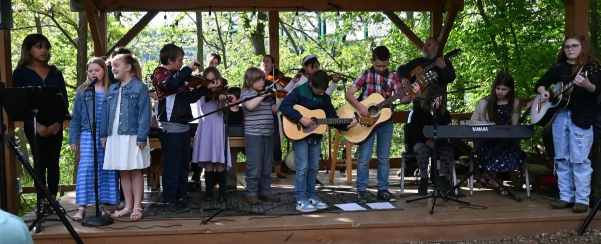
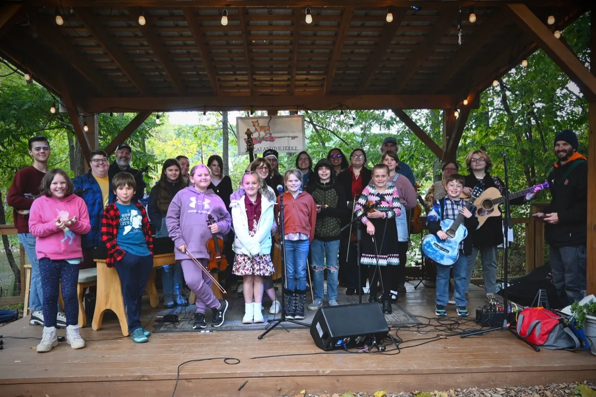
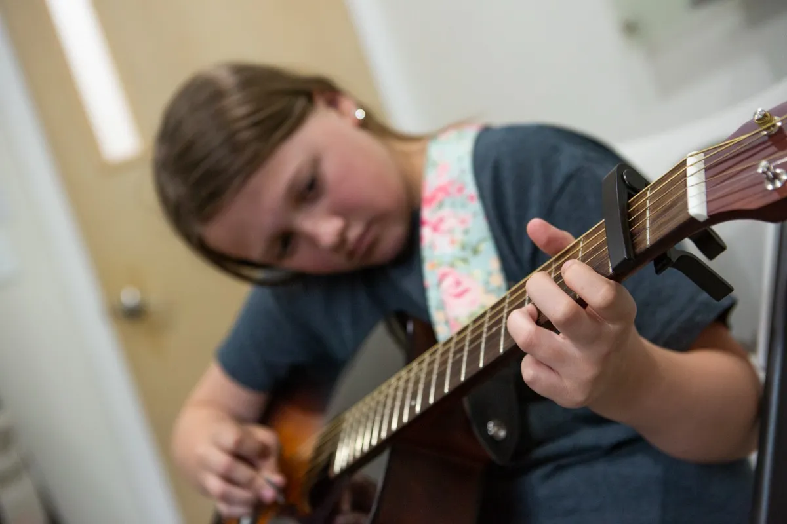
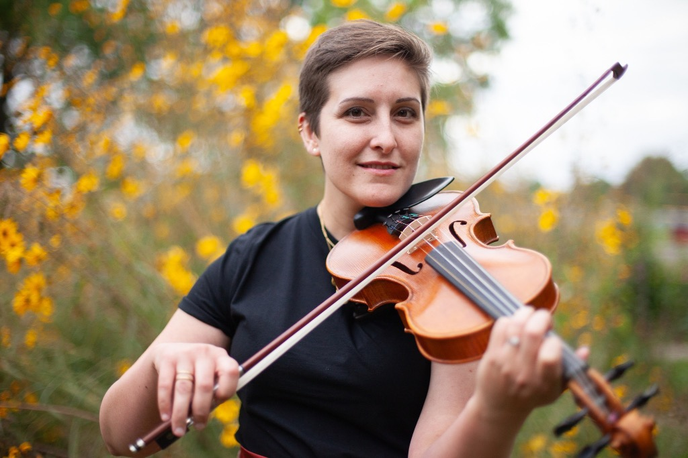
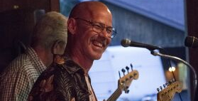

Learn about our mission, history, and impact on local community and West Virginia cultural heritage through music and dance education.
1. Empower children and youth via access to high-quality music education, break down aspirational and social barriers to music education, cultivate a diverse community of passionate, young musicians, and foster creativity, discipline and self-confidence.
2. Celebrate the rich cultural heritage of our community through the promotion of and education in participatory folk dance with the intention of nurturing social unity, preserving cultural identity, and providing transformative experiences to individuals across multiple generations.



Our program supports music education and instrumental instruction as well as community square dance events. We serve children and youth ages 8-18 from low-income households, providing scholarships for music lessons and create opportunities for multi-generational community engagement through traditional folk dance.
Hours of Music Education
Hours of Practice Inspired
Scholarship Students
Quarterly Community Dances
Access to Instruments & Resources
The principles that guide everything we do in service of our students and community.
We strive for the highest standards in everything we do, from music instruction to group events.
We believe in the power of community to transform lives and create lasting positive change.
We foster personal and artistic growth in every student, helping them reach their full potential.
We treat every individual with dignity and respect, creating a safe and inclusive environment.
We encourage young people to become leaders in music and dance to carry tradition forward.
We continuously innovate our programs to better serve our students and community needs.
Meet the dedicated team leading our mission to transform lives through music and dance education.

Executive Director
Dakota Karper, hailing from rural West Virginia, grew up immersed in the rich traditions of Appalachian Old-time music. From an early age, she embraced folk music as she learned to play the fiddle. Her music reflects a profound connection to her roots, blending haunting melodies, energetic bow strokes, and rhythmic grooves. Over the years, Dakota has played with bands, including the Short Mountain String Band, Hay Fever, Hemlock and Hickory, and Vandalia. In 2019, Dakota founded 'The Cat and The Fiddle,' a traditional roots music school. In 2023, Dakota was a founding member and then appointed executive director of the non-profit 'Cacapon Music & Dance Foundation,' furthering her commitment to preserving and promoting Appalachian music and culture.
Board President
Booth is a lifelong student of peace educator Prem Rawat and has volunteered for over 50 years in support of his work. He and his wife, Ibi Hinrichs, found a weekend home in Hampshire County in 2006 and retired here in 2016. They are both enthusiastic supporters of the arts and music programs of such community organizations as The River House, Hampshire County Arts Council, and now Cacapon Music and Dance Foundation.

Member at Large
Steve Bailes was born in Clarksburg, WV but most of his public schooling was completed in Arlington, VA. He completed an M.A. At West Virginia University. He is a retired Hampshire County teacher where he often taught guitar lessons. He is pleased to know Capon Bridge Middle School has resurrected the Chocolate House which he and Charlie Streisel started. Steve and his wife, Terry Lynn, live in North River Mills where they raised two daughters and continue to operate a farm. He also enjoys playing rock and roll with his band, Rain Crow.
Secretary
Lisa grew up in Virginia playing in school orchestras through adulthood. She is a recent resident to West Virginia after building a home in Hampshire County in 2016. Her many times great uncle Robert Harper founded Harper's Ferry and built a Quaker meeting house near the site of Winchester. Lisa wishes she had exposure to traditional music as a child, and has become an enthusiastic supporter of the musical and cultural heritage of Appalachian Old Time music. She uses her technical skills and knowledge to aid in the mission of CMDF.